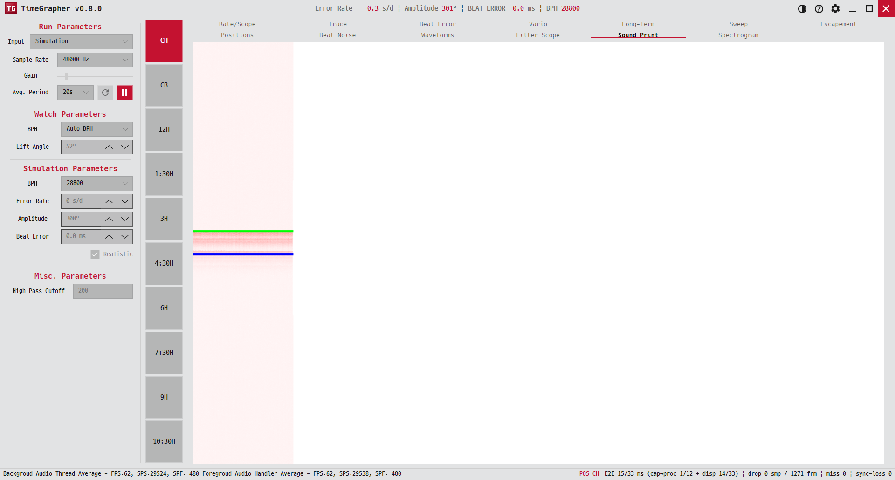

2. Sound Print
시계 소리의 시각적 "지문". 신호가 규칙적이고 건강한지 패턴으로 한눈에 봅니다.
A visual "fingerprint" of the watch's sound — see at a glance whether the signal is regular and healthy.

용도 · Purpose
검출이나 숫자가 아니라, 들어온 소리 자체를 이미지로 펼쳐 신호의 결을 봅니다. 규칙적인 똑딱은 규칙적인 무늬로, 잡음은 흐릿한 얼룩으로 나타납니다.
Rather than numbers or detections, it spreads the raw sound into an image so you can see the texture of the signal: a regular tick makes a regular pattern; noise smears into haze.
무엇이 보이나 · What's shown
- 가로Horizontal
- 최근 시간 구간(픽셀 열로 흐름).A recent time window (flowing as pixel columns).
- 세로Vertical
- 주파수/신호 성분.Frequency / signal content.
- 밝기·색Brightness
- 해당 지점의 신호 세기. 빈 영역은 테마 배경색(테마 전환 시 함께 바뀜).Signal strength at that point. Empty areas use the theme background (remaps on theme toggle).
읽는 법 · How to read
- 건강한 시계 — 같은 무늬가 일정 간격으로 또렷이 반복됩니다(주기적 신호).Healthy watch — the same pattern repeats crisply at a steady spacing (periodic signal).
- 문제 신호 — 무늬가 흐릿하거나 불규칙하면 잡음이 많거나 신호가 약한 것입니다.Trouble — diffuse or irregular patterns mean noise or a weak signal.
- ⏸로 일시정지하면 이미지가 멈춰 자세히 살펴볼 수 있습니다.Pause (⏸) to freeze the image for closer inspection.
이 탭은 보기 전용이라 별도 옵션이 없습니다. 숫자 진단은 Rate/Scope·Beat Error에서, 주파수 분석은 Spectrogram에서 보세요.
This tab is view-only (no options). For numeric diagnosis use Rate/Scope / Beat Error; for frequency analysis see Spectrogram.